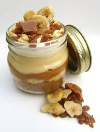

Overnight oatmeal Banoffee

Overnight oatmeal is an amazing food. It combines very good taste
and the energy that it gives.
And the best thing of all is that it is healthy.
You can enjoy it as breakfast for a good energy
boost or in the afternoon to
enjoy as dessert without any regrets
Ingredients
- Almond milk or soy milk
- Oat
- spoon peanut butter
- banana
- chocolate drops
Steps
- We put in a small jar 125ml almond or soy milk
- We add 50gr oat
- 1 tablespoon of peanut butter
- We add 1 smashed banana
- Also we add a teaspoon of the chocolate drops
- Finally we put the jar in the fridge for at least 3 hours or all night